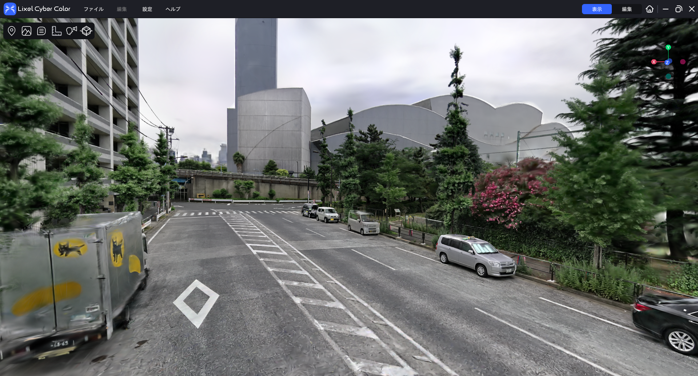
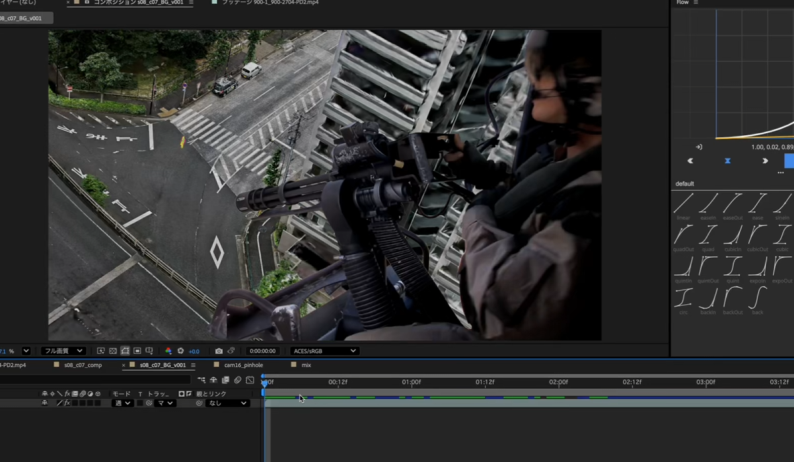
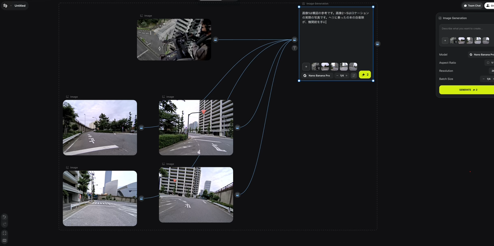
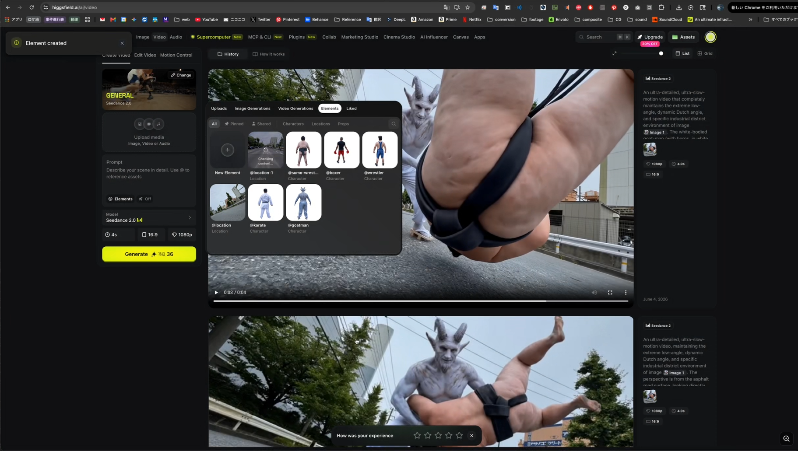
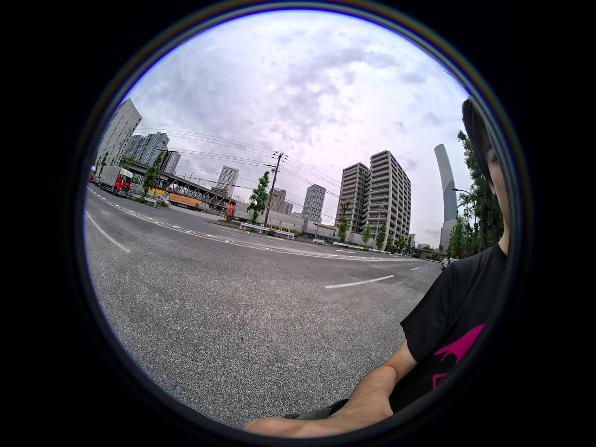
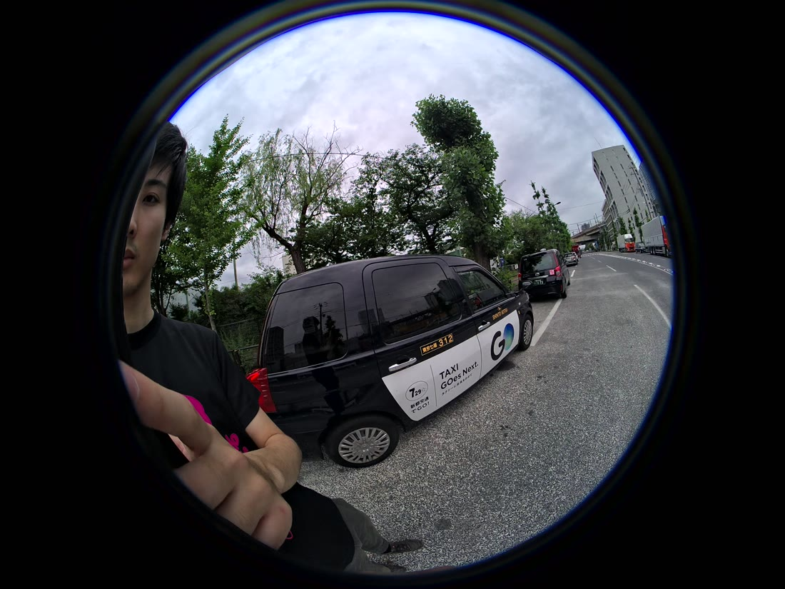
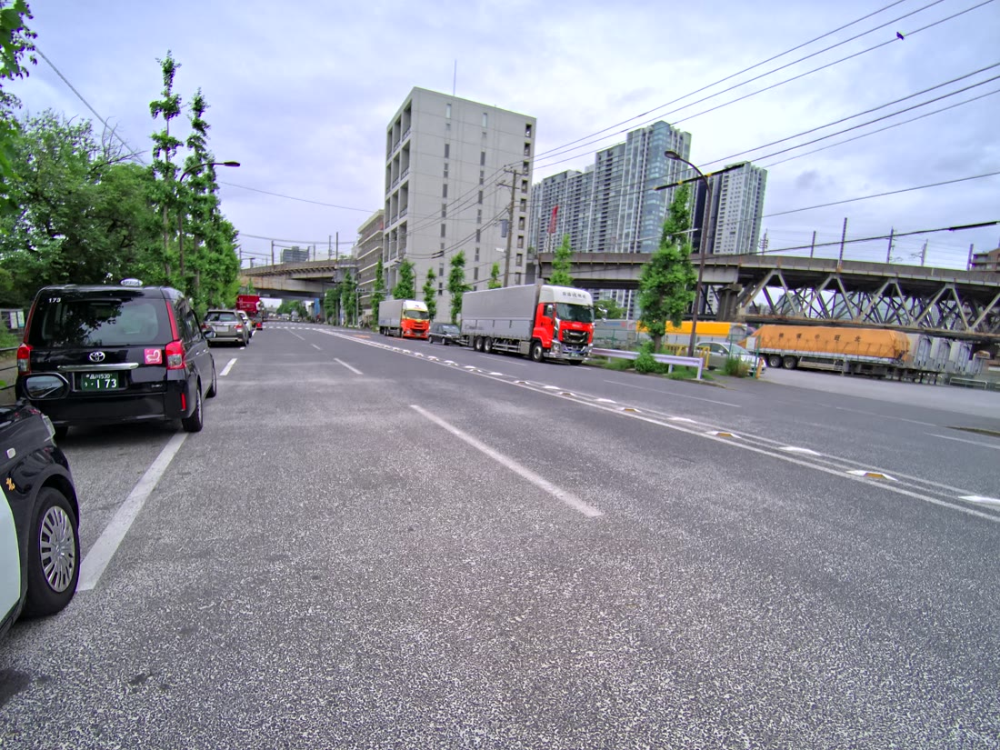
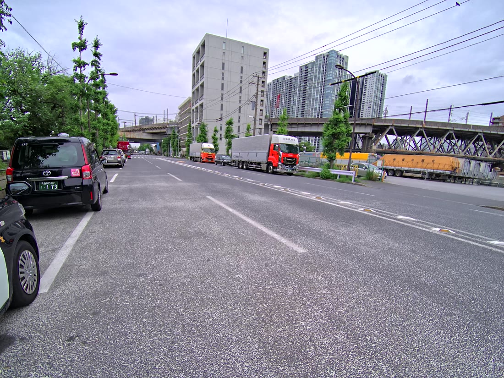

01. このワークフローでできること
3D Gaussian Splatting（3DGS）の強みは、一度取り込めば視点を後から自由に作れることです。これを利用すると、現場を歩いて撮るだけで次のことが地続きにできます。
- ドローンを飛ばさずに空撮アングル（ドローンカット）を作る
- 実写VFX素材（ヘリ・人物など）の背景プレートとして使う
- AI画像・動画生成の構図／ロケーション参照に回す
今回は例として「自衛隊員がヘリに搭乗し機関銃を構える」カットを、実在の交差点の3DGSをベースに制作します。
02. 用意するもの
- スキャン機材
- XGRIDS PortalCam（SLAMスキャン）
- 3DGS化
- Lixel CyberColor（LCC Studio）
- 合成・3D
- Cinema 4D ／ After Effects（トラッキング）
- AI画像生成
- Nano Banana Pro（画像参照ベース生成）
- AI動画生成
- Higgsfield / SeeDance（動画リファレンス）
- リライティング
- SwitchLight（Beeble AI・PBR分解＋HDRIリライトで合成素材を背景の光に馴染ませる）
03. 手順1：PortalCamで現場を徒歩スキャン
PortalCamを持って現場を歩き、実空間を取得します。ドローンや特殊機材は不要で、許可・天候のハードルも低いのが利点です。
アスファルトは特徴が少なくSLAMが滑りやすいので、路面標示・縁石・信号・建物角など特徴のある場所を動線に必ず入れ、ループを閉じるように歩く。同時に、後でAI参照に使うロケーション実写写真も数枚撮っておくと効率的です。
ロケーションの実写は、PortalCam内部の
.xbin（XBAG形式・数GB）に H.264動画ストリーム（/camera_center/h264・魚眼パノラマ）として記録されています。JPEG静止画では入っていないため、LCC Studioでフレーム書き出しするか、NALカーブで .h264 を取り出して ffmpeg -i camera.h264 frame_%05d.jpg で連番化します（詳細な構造と手順は付録参照）。04. 手順2：LCC Studioで3DGS化
取得データを Lixel CyberColor（LCC Studio）に読み込み、3D Gaussian Splatting に変換します。これで視点自由・フォトリアルな立体素材になります。

05. 手順3：Cinema4Dでドローンカットを合成
3-1. 実写素材をトラッキング
ヘリ・ガトリング等の実写素材を After Effects 等でトラッキングし、動きのデータを取得します。
3-2. C4Dに3DGSを背景として読み込む
Cinema4Dに3DGSを読み込み、背景プレートとして配置。トラッキングした実写素材を、その上にオーバーレイ表示します。視点を上空に振れば、徒歩で撮った現場が空撮アングルに変わります。
3-3. レンダリング
カメラワークを決めてレンダリング。これで「ドローンカット」が完成します。

実写合成の「背景が動くと破綻する」問題を、視点を自由に作れる3DGSが解決します。飛ばせない場所・撮れない高度のアングルも、現場データから後付けで作れます。
応用編：AIを使った発展的な活用
ここからは応用編です。基本の「ドローンカット制作（手順1〜3）」に対し、3DGSで取り込んだ現場をAI画像・動画生成や影づけの素材／参照として使う、発展的なワークフローを紹介します。
応用1. Nano Banana ProでAI画像を生成
AI生成カットは、まず静止画から作ります。Nano Banana Pro に複数の参照画像を渡し、構図はドローンカット、ディテールは現場写真から取らせます。
- 画像1＝構図の参考（ドローンカットの合成画）
- 画像2〜5＝ロケーションの実際の写真（PortalCam撮影）
画像1は構図の参考です。
画像2〜5はロケーションの実際の写真です。
ヘリに乗った日本の自衛隊員が、機関銃を手に構えている——
生成物の権利・モデル規約は用途（商用/公開）に応じて要確認。実在地・人物の表現はセンシティブな題材になり得るため、公開前にチェックする。
応用2. Higgsfield/SeeDanceでAI動画化
静止画ができたら、Higgsfield（SeeDance 2.0）で動画化します。ポイントは Elements機能。PortalCamで撮ったロケ写真を「Location」要素として登録し、キャラクターを別要素として組み合わせる方式です。
5-1. ロケを「Location要素」として登録
PortalCamのロケ写真（location_01〜06 など複数アングル）をアップロードし、@location という再利用可能なロケーション要素を作成。これで「同じ現場」を何度でも生成に呼び出せます。
5-2. キャラクター要素と組み合わせる
用意したキャラ（例：@goatman / @wrestler / @karate など）を選び、ロケ要素と一緒にプロンプトへ。@でアセットを参照します。
5-3. 構図・アングルを画像で固定して生成
手順4の画像を Image 1（構図・アングルの参照）として渡し、現場の質感とローアングル/ダッチアングルを維持したまま生成します。
An ultra-detailed, ultra-slow-motion video that completely
maintains the extreme low-angle, dynamic Dutch angle, and
specific industrial district environment of Image 1.
@location ... @goatman ...
@location とキャラ要素（@goatman 等）を組み合わせ、Image 1の構図を維持して動画生成。PortalCamで一度撮った現場を
@location として登録しておくと、キャラや構図を差し替えながら同じ場所で何カットも生成できる。スキャン資産がそのままAI制作の素材ライブラリになります。応用3. SwitchLightで影・ライティングを馴染ませる
3DGS背景にCG・AI・実写の素材を合成すると、地面に影が無く“浮く”／光の向きが背景と合わない問題が起きます。3DGSは撮影時のライティングが焼き込まれているため、合成素材側に「背景と同じ光」と「接地影」を与えないと馴染みません。ここは SwitchLight（Beeble AI） のリライティングを使うのが本命です。
SwitchLightとは
被写体（人物・オブジェクト）を PBRマップ（アルベド／ノーマル／ラフネス／スペキュラ）に分解（デライト）し、任意の HDRI環境で再ライティング（リライト） できるAIツール。静止画だけでなく動画にも対応し、フレーム間が安定するのが強み。「AIに影を描き足す」より物理的に整合した結果が得られます。
手順
- 素材をデライト：合成したい実写／キャラ素材をSwitchLightに入れ、PBRマップを抽出（焼き込まれた元のライトを除去）。
- シーンの光を用意：3DGS背景のライティングを表すHDRI／環境光（時間帯・主光源の方向・色）を用意。現場のロケ写真やパノラマから作るとマッチ精度が上がる。
- リライト：そのHDRIで素材をリライト → 背景と光の向き・色・強さ・陰影が一致し、素材のセルフシャドウが正しく付く。
- 接地影（コンタクトシャドウ）：主光源の方向に合わせてグラウンドシャドウのパスを作り、After Effectsで乗算合成。地面の色を少し拾って馴染ませる。
「AIに影を描いて」は構図ごとにブレやすく、動画ではチラつく。SwitchLightはPBR分解＋環境光ベースのリライトなので光源方向に対して物理的に整合し、動画でも安定。背景3DGSの主光源（建物・電柱の影の向きと長さ）にHDRIの方向を合わせるのが最重要。
最終の濃度・向きは人の目で微調整する。鏡面・透過の強い素材や激しい逆光は破綻しやすいので、必要に応じてAE／C4D側で補完。クイックな静止画なら、前段のNano Banana Proに「光源方向に合わせて接地影を追加」と指示する簡易代替も使える。
応用4. AIで破綻部分を修正・ディティール補完する
歩行スキャンの3DGS／フォトグラメトリは、木の上・遠景の大きな建物・画面端の建物や道路・車などの描画が崩れやすい弱点があります。これも Nano Banana Pro / Gemini などのAIで修正できます。
やり方
- 破綻したカット（画像1）と、実際のロケ地の地上写真（画像2〜3）をAIに渡す。
- 「構図・パースは崩さず、地上写真を参考に背景を綺麗にブラッシュアップして」と指示する。
- 必要に応じて、AIに新たなディティールを追加させて出力することも可能。
この画像1の背景はフォトグラメトリで作ったが、右の建物・道路・車などの
破綻がひどい。画像2〜3が実際のロケ地の地上写真。
それを参考に、画像1の構図やパースは崩さずに背景を綺麗にブラッシュアップして。修正の参照に使う地上写真は、PortalCam内部の
.xBin から連番で取り出せます（手順1の注記参照）。現場の実写が多いほど、破綻修正・ディティール補完の精度が上がります。06. つまずきポイントとTips
- 3DGSのスケール／原点：C4Dに持ち込む前に基準寸法で合わせておくと、後の合成・計測が安定する。
- 参照画像は“役割を明示”：「構図用」「ディテール用」を文章で書き分けると生成が安定（画像1=構図／画像2〜5=実写）。
- 空・反射は弱点：3DGSは空や鏡面が苦手。背景に空が多いカットは合成側で足す。
- カラーマネジメント：実写合成は ACES 等で統一するとAI生成物との馴染みが良い。
付録. xBin（XBAG）の構造とロケ実写の取り出し
PortalCamが出力する .xbin は、XGRIDS独自の 「XBAG」コンテナ（ROS bag風の多ストリーム記録）です。実機データ 2026-06-02-135701.xbin（約8.2GB）を解析した結果をもとに、ロケ実写（カメラ映像）の取り出し手順を具体的に示します。
XBAGコンテナの構造（解析結果）
- マジックナンバー：先頭4バイトが
XBAG（0x58 42 41 47）。 - ヘッダ：protobuf形式のマニフェスト。端末シリアル
A261AA747F、ファームV3.2.5-20260402.131505、製品名PortalCam、LiDARrs_airy、対応GNSSGPS / QZSS / GAL / GLO / BDS / IRNSS等が格納される。 - 本体：複数トピックのレコードが時系列でインターリーブ。確認できたトピック＝
/camera_center/h264（カメラ）、lidar（点群）、imu、gnss。
カメラ映像は「イントラオンリーH.264」
カメラストリームは 全フレームがIDR（イントラオンリー）のH.264 でした。各フレームが SPS(7) + PPS(8) + SEI(6) + IDR(5) のアクセスユニットとして、標準のNALスタートコード 00 00 00 01 付きで格納されています（フレーム間予測なし＝各フレーム独立デコード可・魚眼パノラマ）。このため、カメラのNALを順に拾って連結すれば、そのまま .h264 エレメンタリストリームとして扱えます。
方法A：LCC Studio で書き出す（公式・推奨）
- LCC Studio に
.xbinを読み込む。 - カメラ／パノラマのフレーム書き出しで連番JPEG/PNGを出力。
色・パノラマ展開・タイムスタンプが正しく揃う正攻法。まずこれを試す。
方法B：H.264をNALカーブで手動抽出（応用）
LCCを介さず、bagからカメラのH.264だけを抜く方法。イントラオンリーかつNALスタートコード付きなので、カメラのNAL種別（7/8/6/5）を拾って連結すれば camera.h264 になります。
# xbag_camera_carve.py — PortalCam .xbin から H.264(イントラ) を抽出
import sys
src, dst = sys.argv[1], sys.argv[2]
SC = b"\x00\x00\x00\x01"
KEEP = {5, 6, 7, 8} # IDR / SEI / SPS / PPS
data = open(src, "rb").read() # ※8GB級はメモリ注意（分割読みは下の注記）
out = bytearray()
i = data.find(SC)
while i >= 0:
j = data.find(SC, i + 4)
nal = data[i: (j if j >= 0 else len(data))]
if len(nal) > 4 and (nal[4] & 0x1f) in KEEP:
out += nal
i = j
open(dst, "wb").write(out)
print("wrote", len(out), "bytes")# 実行 → 連番JPEG化
python xbag_camera_carve.py 2026-06-02-135701.xbin camera.h264
ffmpeg -i camera.h264 -q:v 2 frame_%05d.jpgこのカーブ法は簡易版です。①8GB級ファイルは一括読み込みでメモリを食う（実運用は数MBずつストリーム走査に置き換える）。②LiDAR/IMUのバイト列が偶然NAL列を作る誤検出の可能性がある。厳密に分離するには、本来はXBAGのprotobufレコード索引を解析し、カメラトピックのバイト範囲だけを連結するのが正確。確実性を優先するなら方法A（LCC Studio）を使う。
抽出フレームは魚眼パノラマのため、AI参照や合成に使う際は必要に応じて平面（レクティリニア）へ展開する。LCC側の書き出しなら展開済みで出せる場合が多い。
xBinに入っている4カメラの画像
マニフェストの camera.yaml には 4台のカメラ（camera_0〜3） のキャリブレーションが格納され、映像は単一の /camera_center/h264 に4台分が多重化（インターリーブ）されています（いずれも 4000×3000）。実際にデコードして取り出した各カメラの絵が以下です。
- camera_0 / camera_1 ＝ 魚眼（モデル
kb4・約190°・4000×3000） - 円周魚眼の2台。前後（左右）に向けて配置され、合わせて全周＋天球をカバー。操作者ごと周囲を写し込み、点群・3DGSのカラー付け（テクスチャ）と SLAMの特徴点に使われる。
- camera_2 / camera_3 ＝ ピンホール（約90°・低歪み・4000×3000）
- 低歪みのレクチリニア2台。前方の高精細・直線が歪まない画を取得し、詳細テクスチャ／前方ディテール（必要に応じ視差）に寄与。AI参照や合成プレートにも使いやすい。

魚眼①（camera_0想定／操作者が右）：前半球の全周カラー
魚眼②（camera_1想定／操作者が左）：後半球の全周カラー
ピンホール①（前方・低歪み広角）：高精細テクスチャ
ピンホール②（前方ペア）：詳細／視差用映像は1本のH.264に多重化されているため、フレームの見た目（魚眼/ピンホール・写り込む向き）で分類しています。
camera_0〜3 の厳密な番号対応・タイムスタンプ整合は、camera.yaml のポーズ（extrinsic）とbagのレコード索引、またはLCC Studioの書き出しで確定できます。記録されているストリーム一覧
XBAGには、3DGSを正確に・実寸で・地理参照付きで再構成するためのセンサーデータが束ねられています。実機解析で確認できた内訳は次の通りです。
- カメラ
/camera_center/h264 - イントラオンリーH.264（魚眼パノラマ）。色テクスチャ＆ロケ実写の供給源。
- LiDAR
rs_airy - 点群（RoboSense Airy系）。形状・スケールの骨格。SLAMの主軸。
- IMU
imu - 加速度・角速度。フレーム間の姿勢推定とブレ補正、点群とカメラの時刻同期に使用。
- GNSS
gnss - マルチ衛星測位
GPS / QZSS / Galileo / GLONASS / BeiDou / IRNSS。絶対座標・方位の付与。
「歩いて撮るだけ」で実寸・絶対座標が付くのは、LiDAR（形状）＋IMU（姿勢）＋多衛星GNSS（位置）＋カメラ（色）の融合を1つのbagに同期記録しているから。だからC4D合成で計測がそのまま使え、現地に行かずに導線・画角・寸法を検証できます。
ファイル名・キャプチャIDの読み方
ヘッダには A261AA747F-1780376221910 のようなキャプチャIDが入ります。
A261AA747F＝ 端末シリアル（本体のヘッダにも記録）。1780376221910＝ Unixエポック・ミリ秒。秒に直すと1780376221→ 2026-06-02 13:57:01 (JST)。ファイル名2026-06-02-135701.xbinと一致する。
つまりキャプチャ単位で「どの端末が・いつ撮ったか」が一意に追える。案件管理では、このIDをロケ地・案件名に紐付けて台帳化すると後追いが楽になります。
protobufマニフェストの読み方
先頭 XBAG の直後はprotobufのマニフェスト領域です。バイナリを覗くと、ワイヤ形式のタグ（0x0a＝フィールド1・length-delimited 等）でネストし、次の情報が平文で並んでいます。
XBAG ....
A261AA747F # 端末シリアル
V3.2.5-20260402.131505 # ファームウェア
v2.1.2.20251112.beta2 # 構成コンポーネント版
PortalCam # 製品名
rs_airy # LiDAR
IRNSS / QZSS / GAL / GLO / BDS / GPS # 対応GNSSヘッダ以降はレコード本体（カメラAU・点群・IMU・GNSSのインターリーブ）で、多くは圧縮/バイナリ。正確に各トピックを分離するには、このマニフェストのトピック定義とレコード索引（オフセット表）を辿るのが本筋です。方法B（NALカーブ）は索引を読まずにカメラだけを横取りする近道、という位置づけになります。
点群・IMU・GNSSを使いたいとき
- 点群（LiDAR）：LCC Studioで3DGS化のほか、メッシュ／PLY書き出しでCG・建築可視化に転用可能。生点群が要るときもLCC経由が確実。
- IMU／GNSS：単体で取り出す実用機会は少ないが、実寸スケールの担保・北方向（方位）合わせ・複数スキャンの位置合わせの根拠になる。屋外で複数地点を撮って繋ぐ場合に効く。
xBinは1ファイルで数〜十数GBになる。原本（xBin）は必ず別ストレージにバックアップしてから書き出し作業を行う。LCCの書き出し設定（解像度・パノラマ展開・座標系）は案件で揃え、社内の納品規則に沿って命名・梱包する。
画像（JPEG）として取り出す手順
「H.264をカーブ → ffmpegでJPEGに変換」の最小レシピです（前述の方法BをJPEG出力まで通したもの）。
- ffmpegを用意：未導入なら
pip install imageio-ffmpeg（同梱バイナリが入る）か、公式ビルドを入手してPATHに置く。 - カメラH.264をカーブ：方法Bの
xbag_camera_carve.pyでcamera.h264を作る（イントラオンリー＝各フレーム独立）。 - JPEGへ連番デコード：下記コマンドで書き出す。
# 全フレームをJPEGに
ffmpeg -i camera.h264 -q:v 2 frame_%05d.jpg
# 先頭の数フレームだけ確認
ffmpeg -i camera.h264 -frames:v 8 -q:v 2 check_%02d.jpg
# レビュー用に横1100pxへ縮小
ffmpeg -i camera.h264 -vf scale=1100:-1 -q:v 3 small_%05d.jpg本データは4台が1本のH.264に多重化されているため、出力される連番JPEGには魚眼／ピンホールが順番に混在します。見た目で仕分けるか、SPS解析で解像度・カメラ別にフォルダ分けします（厳密な番号対応はLCCかextrinsicで確定）。
↑この情報をAIに投げて、画像抽出をしてと指示すれば画像は得られるので、それが一番楽で再現性があります。ぜひお試しを。
07. まとめ
PortalCamの徒歩スキャン1回が、ドローンカット・実写合成プレート・AI生成の参照という3つの素材を同時に生みます。「現場を3DGSで持ち帰る」を起点に、撮影前段からポスプロ、AI生成までを一本の線でつなげるのが、このワークフローの肝です。